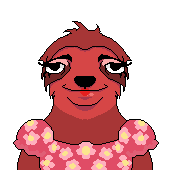
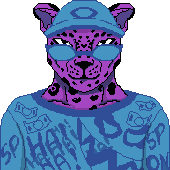
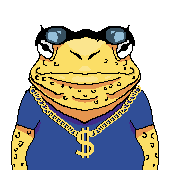

Estilo de Ilustração: Pixel Art
Por que foi escolhido?
A escolha do pixel art para "A Toca do Lobo" é uma decisão de design
estratégica e multifacetada. O estilo funciona como uma ferramenta de comédia,
suavizando a premissa de um "lobo-guará agiota" e permitindo que o jogo
seja divertido e charmoso, em vez de sombrio. Ele captura perfeitamente a
"brasilidade" de quebrada com um filtro cômico.
O pixel art também garante a clareza total da interface — essencial para um jogo de
inspeção de documentos — e representa uma escolha viável para uma produção indie.
Diretrizes para Personagens
Os personagens tem um estilo Cartoon mas em Pixel-art, com personagens
antropomórficos com animais humanizados, com formas simplificadas e traços
exagerados, como olhos desproporcionais e expressivos.



Cores
Os personagens seguem uma paleta de cores especifica, baseada na paleta de cor da
identidade visual.
Traçado
Todos os personagens são tracejados, na cor preta #212121, com 1px de grossura.
Tipos de animais
Esses são os animais permitidos de usar no jogo para criar mais variações:
- Cachorro Fiapo de Manga
- Capivara
- Cavalo
- Gato
- Onça
- Pombo
- Sapo
- Urubu
- Tucano
- Sagui
- Rato
- Bicho Preguiça
Ângulo
Os personagens estão sempre no mesmo ângulo, de frente pra câmera, em uma pesperctiva
frontal.
Pose
Eles estão sempre na mesma pose, em pé, com os braços para baixo e olhando para
frente
Iluminação
Os personagens tem apenas 1 camada de sombra e 1 camada de luz
Trajes
Os clientes tem acessórios, e pode usar combinações diferentes desses acessórios a
criar personagens diferentes.